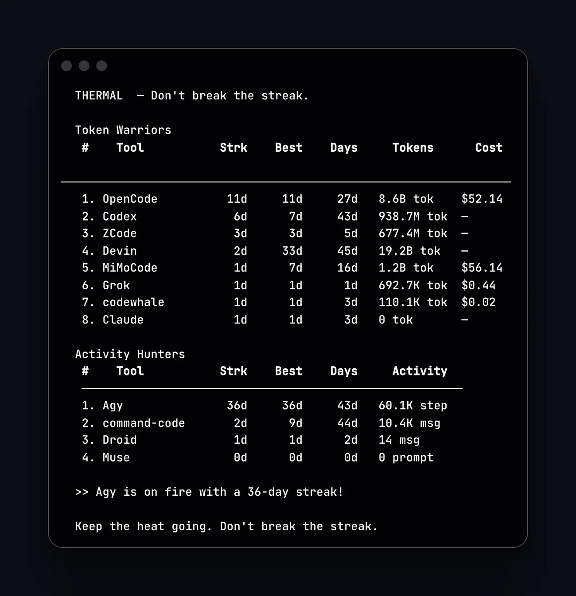
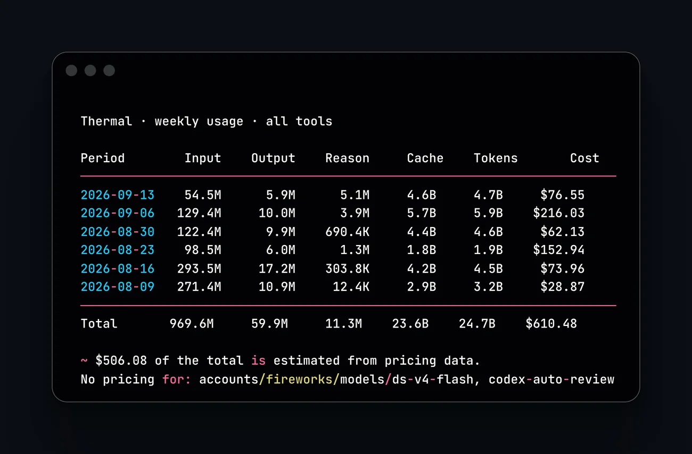
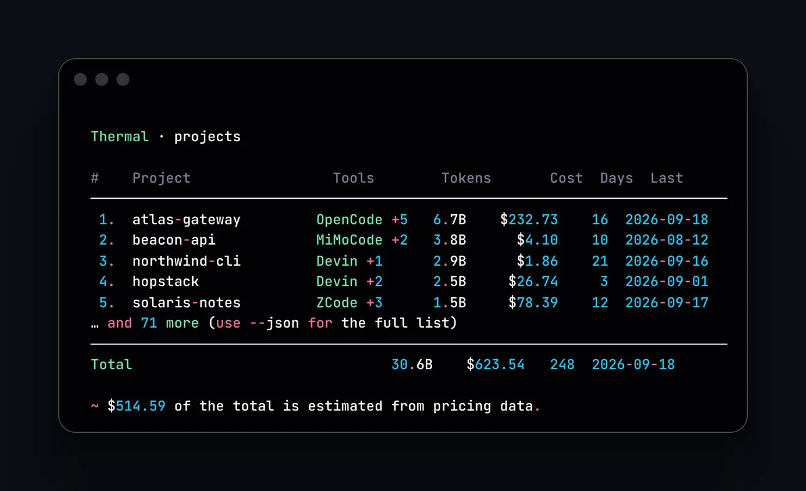

Don't break the streak.
Thermal reads the session databases your AI coding tools already write, and renders streaks, tokens, and cost as a heatmap in the terminal. Twelve tools, one table. Nothing to configure, and nothing written back to your data.
go install github.com/jadmadi/thermal/cmd/thermal@latest
thermalLast 53 weeks
less more
Install and run
One command with a Go toolchain. Prebuilt binaries cover Linux, macOS, and Windows with UPX-compressed release assets.
-
Install
With Go 1.26 or newer, the version in go.mod:
go install github.com/jadmadi/thermal/cmd/thermal@latestOr grab a binary from GitHub Releases. To build from source instead:
git clone https://github.com/jadmadi/thermal cd thermal ./build.sh --release -
Run it
With no arguments thermal lists every tool it finds and ranks them. Tool data is read on demand, so you can start with a single tool:
thermal # leaderboard for every installed tool thermal opencode # one tool, full dashboard thermal --tool auto # first tool it finds on this machine -
Keep it current
Binaries installed from a release or go install update themselves in place, with an atomic replace of the running file:
thermal upgrade thermal version
What it answers
Each question below is one the tools themselves cannot answer, because each one only knows its own usage.
What are the agents costing me?
Spend sits in twelve different places, and none of them show a total. Two of them record no cost at all.
One table puts every tool in the same units, with recorded cost where it exists and estimates where it does not.
Which project is eating the budget?
A bill per tool says what you spent, never on what. Invoicing a client or dividing cost between teams needs the project, not the tool.
thermal projects ranks repositories by tokens and cost, merged across every tool that touched each one.
Which model burns the money?
Token share and cost share are not the same number. A model used a fraction of the time can carry most of the bill.
thermal models --sort cost ranks by estimated cost, so routing decisions come from spend rather than volume.
Are we still using what we pay for?
Seats expire quietly. The sessions keep running, the activity disappears, and nobody notices a tool stopped being used.
Streaks and active days per tool, plus the heatmap, show which tools you reach for and which have gone cold.
What if the source deletes its history?
Tools rotate their own logs and drop sessions. When that happens, the usage record goes with it, and there is no way to get it back.
Thermal reads SQLite files and JSONL logs in place and writes its own delta cache, so a re-read is fast and the numbers stay repeatable from what each tool still has.
Can I show this without sending code anywhere?
Usage data is still your code's shadow. A dashboard that wants an account or an upload is a hard sell to a security review.
Nothing leaves the machine. Databases open read-only, there is no server and no account, and the only files written are caches under the user cache directory.
Leaderboard
The default view. Tools split into those that record tokens and those that only record activity, because a step count and a token count are not the same unit and should never sit in one column.
Token Warriors rank by tokens burned. Activity Hunters rank by messages, steps, or prompts. Rank order is chosen with --sort.
THERMAL — Don't break the streak.
Token Warriors
# Tool Strk Best Days Tokens Cost
─────────────────────────────────────────────────────────────────
1. OpenCode 10d 10d 26d 8.2B tok $50.54
2. Codex 6d 7d 43d 938.7M tok —
3. ZCode 3d 3d 5d 676.2M tok —
4. Devin 2d 33d 45d 19.2B tok —
5. MiMoCode 1d 7d 16d 1.2B tok $56.14
6. Grok 1d 1d 1d 692.7K tok $0.44
7. codewhale 1d 1d 3d 110.1K tok $0.02
8. Claude 1d 1d 3d 0 tok —
Activity Hunters
# Tool Strk Best Days Activity
───────────────────────────────────────────────────────
1. Agy 36d 36d 43d 60.1K step
2. command-code 2d 9d 44d 10.4K msg
3. Droid 1d 1d 2d 14 msg
4. Muse 0d 0d 0d 0 prompt
>> Agy is on fire with a 36-day streak!
Keep the heat going. Don't break the streak.Scrolls sideways to show every column.
thermal --sort tokens # biggest token consumers first
thermal --sort cost # biggest recorded spend first
thermal --weeks 26 # narrower heatmap, 4 to 104
thermal --no-color # strip ANSI for logs and CI
A day where an agent ran but recorded no tokens still counts, so a push that produced no usage telemetry never breaks your streak.
The dashboard
The reports answer one question each. The dashboard answers them all at once, from a single load of the same data.
thermal dashboard
q quit r range: 30d, 90d, 1y, all
1-5 jump to a view t metric: tokens or cost
tab next view s sort: tokens, cost, name
j / k move down and up ? help
f tool filter (Projects) enter open a project detail
l log scale (Stats) v mix by tool or modelThe Overview view opens with totals, then ranks every tool that recorded usage in the window, with a bar, a twelve-week sparkline, and the current streak. The Projects view ranks repositories and opens a detail on enter, with the tool split, the model split, a weekly trend, and a heatmap scoped to the selected range. Mix stacks the window over time by tool or by model and reports who led and how often that changed. Models ranks every model with an estimated cost. Stats shows the daily distribution with a log scale for long tails, the weekday profile, the top days, the outliers, and a month-end projection drawn as a range rather than a single number. Every total equals the matching report command for the same window, and a test asserts that rather than eyeballing it.
The dashboard needs a terminal. Piped output is told to use the static commands instead, and --json never opens a terminal UI.
Reports
Daily, weekly, and monthly reports fold the same rows into period tables. A week starts on Sunday unless --start-of-week says otherwise.
thermal weekly # every tool, newest week first
thermal opencode daily --last 7 # one tool, last 7 days
thermal monthly --last 1 --breakdown # this month, plus a row per model
thermal weekly --since 2026-08-01 --until 2026-08-31
thermal weekly --order asc --start-of-week monday
thermal weekly --json # unchanged shape, scripts first| Flag | Default | Meaning |
|---|---|---|
| --since, --until | — | Window bounds as YYYY-MM-DD or YYYYMMDD. |
| --last N | 0 | Whole periods back from now. --last 1 is today, this week, or this month. Cannot be combined with --since or --until. |
| --order | desc | asc or desc. |
| --start-of-week | sunday | Any weekday name, for weekly buckets. |
| --breakdown | off | Indents a per-model row under each period. |
Tables list token-bearing periods. A day with no classified tokens, no recorded cost, and no model attribution is skipped, so the Tokens column and the Total row stay in one unit. Daily, weekly, and monthly totals for the same window are identical. Activity-only periods still count toward streaks and the leaderboard.

JSON output
Every report command takes --json and writes to stdout, so a warning can never corrupt the pipe. One period looks like this:
{
"period": "2026-09-18",
"models": {
"deepseek-flash": {
"input": 101725,
"output": 6712,
"reasoning": 20800,
"cacheRead": 2064256
}
},
"inputTokens": 101725,
"outputTokens": 6712,
"reasoningTokens": 20800,
"cacheTokens": 2064256,
"totalTokens": 2193493,
"turns": 1,
"activeDays": 1,
"storedCost": 0.037958718,
"cost": 0.037958718
}| Field | Type | Meaning |
|---|---|---|
| type | string | The report that produced the payload: daily, weekly, monthly, projects, or models. |
| tool | string | The tool name, or absent when the report covers every tool. |
| data | array | One object per period, newest first unless --order asc. |
| totals | object | The same shape as a row, summed from the rows on screen, so it always reconciles. |
| inputTokens … | int64 | Disjoint token types: input, output, reasoning, cache. They add up to totalTokens. |
| models | object | Per-model breakdown for the period, keyed by canonical model id. Absent when a source names no model. |
| turns, activeDays | int | Activity counts, not token counts. |
| storedCost | float | What the source recorded for that period. Zero when the source records none. |
| estimatedCost | float | Priced from models.dev list prices, and only for periods with no stored cost. Omitted when zero. |
| cost | float | Stored plus estimated. This is the number the table shows. |
| missingPricing | array | Model ids the catalog could not price. Omitted when empty. |
| generatedAt | string | RFC 3339 timestamp added by the CLI, not by the aggregator. |
thermal weekly --json | jq '.totals.cost'
thermal projects --json | jq -r '.data[:5][] | "\(.project)\t\(.cost)"'Projects
Tokens and cost per repository. Thermal walks each recorded directory up to its nearest git root, so subdirectories and worktrees fold into one row, and the same repository merges across every tool that touched it.
thermal projects # rank every project by tokens
thermal projects --sort cost # or cost, days, recent
thermal projects --last 30 --top 10 # window and row limit
thermal projects --breakdown # tool split and top models per project
thermal projects --json # full paths, every row
Merge happens by git root, not by path string. Symlinked homes and duplicate checkouts collapse to a single project. A directory with no repository marker falls back to its recorded path rather than an invented name.
Models
Every model id across every tool, ranked by tokens, with the tools that used it. Case is normalized, so GLM-5.3-Flash from ZCode and glm-5.3-flash from OpenCode count once.
thermal models # global ranking
thermal models --sort cost # rank by estimated cost
thermal opencode models # one tool only
thermal models --top 10 Thermal · models
# Model Tools Tokens Cost Days Last
─────────────────────────────────────────────────────────────────────────────────────────────────
1. deepseek-v4.1-flash OpenCode,ZCode 3.9B $23.29 8 2026-09-17
2. deepseek-v4-flash-0731 MiMoCode,OpenCode +1 1.1B $26.62 9 2026-09-12
3. gpt-5.6-sol Codex 386.8M $256.25 10 2026-09-11Scrolls sideways to show every column.
Cost here is always an estimate. A recorded cost belongs to a session or a day, never to one model, so thermal prices models from list prices instead of pretending the split is known.
Cost estimation
Recorded cost always wins. Thermal only estimates the days a source left blank, and it names the models it could not price instead of counting them as free.
Prices come from the models.dev catalog, cached at ~/.cache/thermal/pricing.json and refreshed once a day. Estimates never mix with recorded cost inside one day.
Two totals, two questions
The leaderboard and the reports answer different questions, and their totals do not match. That is by design.
| Command | Shows | Total |
|---|---|---|
| thermal | Recorded cost only, with a line stating the sum. A tool that records no cost shows a dash. | $112.41 |
| thermal projects | Recorded cost plus an estimate for the days a source left blank, with the split named under the total. | $670.66 |
| thermal projects --no-estimate | Recorded cost alone, so the two agree exactly. | $112.41 |
| thermal models | Always an estimate, because recorded cost belongs to a session or a day, never to one model. | $683.21 |
The estimate covers only what the sources name. A day is priced when its source records a model and that model has a list price. A day whose source records neither cost nor a model is counted, not priced, and the footer says so: 19.2B tokens have no model recorded, so no price is applied to them. Treat the recorded part as fact, the estimated part as inference from list prices, and read that line to see what is missing rather than assuming the total is complete.
A day is priced when its source names a model and that model has a price. Tools often record the variant they asked for, like claude-sonnet-5-high, while the catalog prices claude-sonnet-5, so a short list of tier words is stripped before the lookup. Only one word is stripped, never a fuzzy match, because folding two models onto one price would be worse than a blank.
A model the catalog genuinely lacks stays unpriced and is named in the No pricing for line, such as Devin's swe-1-7, which is proprietary and will never appear in a public catalog. Give it a price in ~/.config/thermal/pricing.json and the total picks it up on the next run. A model whose tokens arrive with no type breakdown stays unpriced too, rather than being half priced. Nothing is guessed and nothing is treated as free.
Tools that record no tokens at all, such as Agy, Droid and command-code, report steps or messages. Those counts stay out of token totals, because a step is not a token, and they appear in the Activity Hunters leaderboard and in streaks.
thermal weekly --offline # cached prices only, never fetch
thermal weekly --no-estimate # recorded cost only, works on the leaderboard tooOverride or add a price in ~/.config/thermal/pricing.json:
{
"codex-auto-review": { "input": 1.25, "output": 10 }
}Subscription models report as unpriced. When a model has no list price, it appears in a No pricing for line under the table. That is deliberate: a blank is honest, a zero is not.
How it compares
The token-tracking category is crowded. These are the tools people mention most often, and what each one is built around. All of them are free and open source, and all of them read local files.
| Tool | Built with | Focus | What it does not do |
|---|---|---|---|
| thermal | Go | Heatmap and streaks first, with reports underneath. Twelve tools, one static binary, no runtime. | No per-session view and no five-hour billing windows yet. |
| ccusage | TypeScript | Daily, weekly, monthly, and session reports across 18 tools. The tool that started the category, and the one most people mean by usage tracking. | No contribution heatmap or streak view. Needs Node or bun. |
| tokscale | Rust, TS | Widest tool coverage of the three, plus a public leaderboard and 2D or 3D contribution graphs. | Uploads totals to its leaderboard by default. The graphs are a web dashboard, not the terminal. |
| tku | Rust | Live spend monitoring, subscription and plan insight, multi-account switching, status bar output. | Nine tools, Claude Code first. No heatmap or streak view. |
Pick thermal when the question is about habit. Streaks, active days, and which tools you actually open are its subject. Pick ccusage or tokscale when the question is about accounting down to the session, and pick tku when you want to watch spend while it happens. Nothing stops you running two of them against the same files.
Supported tools
Thermal reads each tool from where it already keeps its own data. Tool names link to the project's own page.
| Tool | Aliases | Metrics |
|---|---|---|
| Devin | devin | Tokens, sessions, cost, projects |
| OpenCode | oc | Tokens, sessions, cost, projects |
| MiMoCode | mimo, mimo- | Tokens, sessions, cost, projects |
| Codex | codex | Tokens, sessions, model and source split, projects |
| codewhale | whale | Tokens, sessions, cost, projects |
| ZCode | zc | Tokens, sessions, model and agent split, projects |
| Grok | grok | Tokens, sessions, cost, projects |
| Claude | claude, ccode | Tokens, sessions, models, projects |
| Muse | muse | Prompt activity, sessions, models |
| Droid | droid, factory | Message activity, sessions |
| command-code | cmd, commandcode | Message activity, sessions, models |
| Agy | agy | Step activity, sessions, models |
Codex also reads reasoning effort and source breakdown from rollout logs when they exist, and the SQLite state file is the primary source. Agy falls back to its legacy overview logs when the current root is absent.
Adding a tool of your own takes one loader file and one registry entry. The rules are in Add a tool below.
Read-only, always. SQLite databases open with mode=ro and a 256 MB mmap window. The only files thermal writes are its own delta cache under ~/.cache/thermal/ and the pricing cache, which is why warm runs only re-read what changed.
Reference
Every command and flag. Report options are rejected where they would be ignored, so a typo fails loudly instead of silently changing nothing.
Commands
| Command | What it prints |
|---|---|
| thermal | Leaderboard across every installed tool. |
| thermal <tool> | Full dashboard: summary, streak, heatmap. |
| thermal dashboard | Interactive dashboard: Overview, Projects, Mix, Models and Stats in one screen. Needs a terminal. |
| thermal daily | One row per day. |
| thermal weekly | One row per week. |
| thermal monthly | One row per month. |
| thermal projects | One row per git repository. |
| thermal models | One row per model id. |
| thermal upgrade | Self-update from GitHub Releases. |
| thermal version | Version, commit, and build date. |
A tool name and a report word combine in either order: thermal opencode weekly is the same as thermal weekly opencode.
Flags
| Flag | Default | Effect |
|---|---|---|
| --tool <name> | all | Scope to one tool. Accepts the aliases above. |
| --db <path> | — | Override the data path for one tool. |
| --weeks <n> | 52 | Heatmap width, 4 to 104. |
| --sort <key> | streak | Leaderboard: streak, tokens, cost. Projects: tokens, cost, days, recent. Models: tokens, cost. |
| --top <n> | 0 | Row limit for projects and models. 0 prints every row. |
| --breakdown | off | Per-model rows in reports, per-project detail in projects. |
| --json | off | Machine-readable output on stdout. |
| --no-color | off | Strip ANSI colour, for logs and CI. |
| GROK_HOME | ~/.grok | Environment variable. Sets the Grok data root; the only path a tool lets you move today. |
| --verbose | off | Non-fatal loader warnings to stderr. stdout stays clean. |
| --offline | off | Use cached prices, never fetch. Reports only. |
| --no-estimate | off | Recorded cost only, no pricing estimates. Works on the leaderboard and on reports. |
$ thermal weekly --top 5
thermal: --top only applies to the projects and models commandsScrolls sideways to show every column.
Common questions
Short answers to what people ask before installing. Everything here is expanded in the sections above.
A command line tool that renders a GitHub-style contribution heatmap for AI coding agents, with streaks, token counts, and cost. One static Go binary, no server, no account.
Twelve: Devin, OpenCode, MiMoCode, Codex, codewhale, ZCode, Grok, Claude, Muse, Droid, command-code, and Agy. Activity-only tools rank separately from tools that record tokens.
No. Thermal opens each database read-only with a 256 MB memory map and never writes to it. The only writes are its own cache under ~/.cache/thermal/. Nothing leaves the machine.
Cost comes from the source when the tool records it. Days with no recorded cost are estimated from models.dev list prices, and models with no price are named under the table rather than counted as free.
Run go install with the module path in the install section above, or download a prebuilt binary for Linux, macOS, or Windows from GitHub Releases.
Git only shows committed work. Thermal shows what the agents actually burned, including tokens and cost on days when nothing was committed.
Add a tool
A loader is one file plus one registry entry. These are the rules that keep the numbers trustworthy, and they are enforced in review.
-
Read only, always
Open SQLite with mode=ro and set PRAGMA mmap_size right after. Never write to a source file. Cache into ~/.cache/thermal/ instead.
-
Keep token types disjoint
Input, output, reasoning, cache read and cache write must add up to the recorded total. Several tools nest reasoning inside output or cache inside input; subtract the nested part in the loader, never in the renderer or the pricer.
-
Normalize the model id
Run every model name through the canonical mapper before it becomes a map key, because tools disagree on case and one model must be one row everywhere.
-
Attribute the project
When the source records where a session ran, emit project rows too, so subdirectories fold into their git root. A source with no project data returns an empty slice rather than an invented name.
-
Bound the work
Multi-file scanners use a worker pool, capped around sixteen, with thread-safe aggregation. Large databases get a delta cache keyed on file modification time or the highest row id.
-
Test the edges
Missing databases, corrupt files, zero-token sessions, and unusual timestamp formats all need a case in internal/loaders/*_test.go. Then register the tool in internal/loaders/registry.go and add its row to the table above.
The full standard lives in AGENTS.md. It covers the loader rules, the build and release flow, and the terminal rendering conventions. Read it before your first pull request.